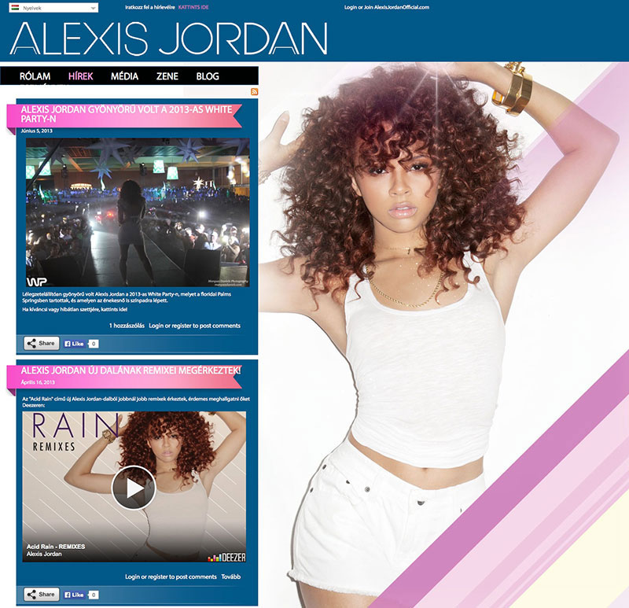

	<section class="portfolio-l-inline">
		<div class="container">
			<div class="row">
				<div class="col col-sm-8 col-xs-12 img-preview">
					
				</div>
				<div class="col col-sm-4 col-xs-12 main-content">
					<h2>Alexis Jordan Official</h2>
					<span class="block-label">The Challenge</span>
					<p>Build site for Roc Nation artist Alexis Jordan. This was the first theme I ever developed for Sony Music.</p>			
					<span class="block-label">The Work</span>		
					<p>Given a hip and colorful design, developed site including language switcher and social share capabilities.</p>
					<p>It's been a while, and the content for the Hungarian version was better maintained than the English. Who knew they were such fans?</p>
					<span class="block-label">Url</span>
					<a href="http://www.alexisjordanofficial.com/hu" target="_blank" >alexisjordanofficial.com/hu</a>
					<span class="block-label">Skills</span>
					<span>drupal, html, css</span>
					<hr/>
					<div class="portfolio-nav">
						<a class="fa fa-chevron-left" href="portfolio-todell.html" title="Previous"></a>
						<a class="fa fa-th" title="List" href="index.html#portfolio"></a>
						<a class="fa fa-chevron-right" href="portfolio-belle.html" title="Next"></a>
					</div>
				</div>							
			</div>
		</div>		
	</section>